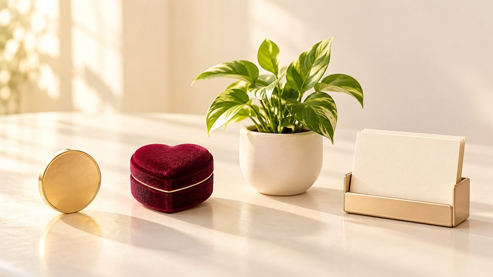

Почему один и тот же год у вас будет и трудным, и удачным одновременно
Мы привыкли спрашивать: «Каким будет мой 2027 год, хорошим или плохим?» Но год почти никогда не бывает одним цветом. В одной сфере он даёт проверку, а в другой в это же время открывает двери

1Год идёт по всем сферам сразу
Покажу на себе
За один месяц: я оказалась в больнице с ребёнком, сама прошла обследование, где нашли хроническое воспаление, и в это же время у меня начал расти блог
Не зная прогноза, я бы впала в жёсткий депресс из-за болезни ребёнка и в страх перед результатами. Но я заранее видела в карте обе линии: закрытые учреждения и здоровье, а рядом рост в работе. Поэтому я не опустила руки, а пользовалась тем, что давал месяц
Вот почему я не делю периоды на «хорошие» и «плохие». Одна сфера может проседать, а другая в тот же момент даёт шанс, который легко упустить, если смотреть только на трудное
2Главное в прогнозе: соляр
Соляр, карта вашего личного года, для меня основа прогноза. Он показывает, что вообще возможно в вашем году: есть ли возможность заработать, выйти замуж, переехать, вырасти в работе
Если в соляре нет возможности выйти замуж, то период, который по транзитам похож на замужество, не сыграет этой роли. Он проиграется совершенно по-другому: например, человек в это время нарастит аудиторию в Инстаграме
Поэтому транзиты, движение планет по вашей личной карте, я смотрю после соляра. Они уточняют периоды внутри тенденций года: где действовать, а где подстраховаться. Это мало кто делает в годовом прогнозе
И третье, компенсаторика. Это план, как подстелить себе соломки и смягчить трудный период не только астрологией, но и логикой: пройти обследование заранее, сменить формат работы, отложить крупную покупку
Вы планируете крупную покупку в 2027
1. Соляр: ваш год в деньгах про рост или про то, чтобы сохранить
2. Транзиты: в какие месяцы деньги идут легче, а где лучше не рисковать
3. Компенсаторика: как подстраховаться, например отложить крупную покупку на спокойный период
♡Компенсаторика на моём примере
Расскажу на своём примере: я не собиралась заводить кота
В моей жизни появился кот. Я даже не планировала заводить питомца: у меня не было такого желания, я не ходила в зоомагазины, не листала объявления, не просила «подарите котика»
Смотрела свой прогноз за прошлый год и увидела, что у меня тогда Луна проходила по шестому дому
Естественно, как и для многих для меня важно здоровье и работа, на это я и обратила внимание
И только сейчас я поняла: появление кота стало моей компенсацией! То, что могло вылиться в болезни или упадок сил, мягко отыгралось через заботу о животном
6 дом ещё называют домом служения. Когда туда попадает Луна, важно служить: заботиться о ком-то, помогать, вкладывать душу. У меня это отыгралось через заботу о коте
Вот так Вселенная всегда подкидывает нам выбор: пройти через сложности или найти мягкий вариант, который компенсирует их
Конечно, карта не заменяет врачей и обследования
3Как этим пользуются клиенты
«Второй год обращаюсь за соляром… Пока получила, пока прослушала, пока переварила информацию… И я ещё это всё раз послушаю и перечитаю»
Вы получаете голосовой разбор и PDF, к которым возвращаетесь весь год, особенно перед важным решением. У одной клиентки PDF на год вышел на 42 страницы
Немного да. Вспомните прошлый год и ответьте:
- в какой сфере было тяжелее всего и когда это началось?
- какая возможность пришла, а вы её не заметили или испугались?
- что бы вы сделали иначе, если бы знали заранее?
Это показывает, сколько стоит год вслепую. А увидеть 2027 заранее можно только по вашему точному времени и месту рождения, соляру и транзитам
Что будет, если не знать
Трудный период в одной сфере кажется концом света, и вы не замечаете, что рядом открывается другая. Решения про работу, деньги и отношения принимаются на эмоциях, а потом выясняется, что момент был не тот
Прогноз нужен, чтобы заранее знать, где подстелить соломки, и принимать решения спокойно, понимая, что вам даёт год
Поэтому я делаю прогноз на 2027 год по всем сферам. Ниже рассказываю, что я разберу и как это проходит ↓